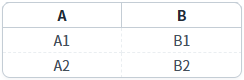
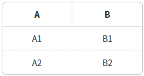
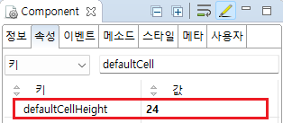

GridView의 'defaultCellHeight' 속성을 사용하여 셀의 기본 높이를 설정한 예제입니다. 셀의 높이는 'px' 단위로 적용됩니다.
셀의 기본 높이 설정
1
실행된 결과를 확인합니다.
각 예제 영역에 출력된 GridView의 셀의 높이를 확인합니다.
Image 1.브라우저(Chrome) 실행 예시 - 셀의 기본 높이가 '24px'로 지정된 GridView

Image 2.브라우저(Chrome) 실행 예시 - 셀의 기본 높이가 '40px'로 지정된 GridView

1
GridView의 속성을 정의합니다.
[필수] defaultCellHeight="숫자형 데이터"
숫자형 데이터로 지정한 값이 'px'단위로 적용됩니다.
예시 1) 셀의 기본 높이를 24px로 지정
defaultCellHeight="24"
Image 3.웹스퀘어 스튜디오의 Component View - 속성 설정 예시

Example 1.Source
<w2:gridView defaultCellHeight="24"> <!-- 중략 --> </w2:gridView>
defaultCellHeight